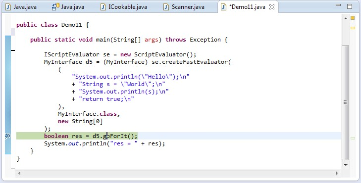
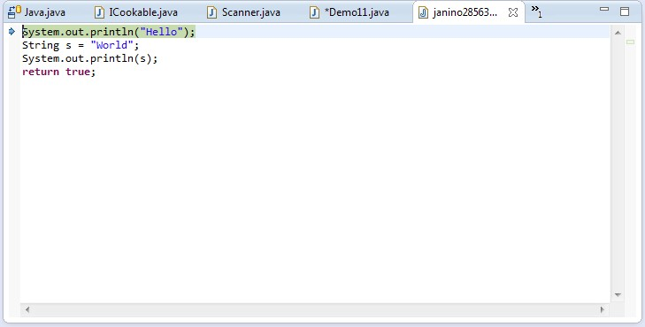
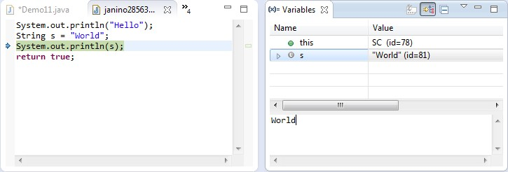

Janino
A super-small, super-fast Java™ compiler

Janino can not only compile a set of source files to a set of class files like JAVAC, but also compile a Java™ expression, block, class body or source file in memory, load the bytecode and execute it directly in the same JVM.
JANINO is integrated with Apache Commons JCI ("Java Compiler Interface") and JBoss Rules / Drools.
JANINO can also be used for static code analysis or code manipulation.
Table of Contents
- Properties
- Limitations
- Download
- Documentation
- Contact
- Developers
Properties
The major design goal was to keep the compiler small and simple, while providing an (almost) complete Java™ compiler.
The following elements of the Java programming language are implemented:
- package declaration, import declaration
- class declaration, interface declaration
- Inheritance (extends and implements)
- Static member type declaration
- Inner (non-static member, local, anonymous) class declaration
- Class initializer, instance initializer
- Field declaration, method declaration
- Local variable declaration
- Class variable initializer, instance variable initializer
- Block statement ({...})
- if ... else statement
- Basic for statement
- Enhanced for statement
- while statement
- do ... while statement
- try ... catch ... finally statement
- throw statement
- return statement
- break statement
- continue statement
- switch statement
- synchronized statement
- All primitive types (boolean, char, byte, short, int, long, float, double)
- Assignment operator =
- Compound assignment operators +=, -=, *=, /=, &=, |=, ^=, %=, <<=, >>=, >>>=
- Conditional operators ? ... :, &&, ||
- Boolean logical operators &, ^, |
- Integer bitwise operators &, ^, |
- Numeric operators *, /, %, +, -, <<, >>, >>>
- String concatenation operator +
- Operators ++ and --
- Type comparison operator instanceof
- Unary operators +, -, ~, !
- Parenthesized expression
- Field access (like System.out)
- Superclass member access (super.meth(), super.field)
- this (reference to current instance)
- Alternate constructor invocation (this(a, b, c);)
- Superclass constructor invocation (super(a, b, c);)
- Method invocation (System.out.println("Hello"))
- Class instance creation (new Foo())
- Primitive array creation (new int[10][5][])
- Class or interface array creation (new Foo[10][5][])
- Array access (args[0])
- Local variable access
- Integer, floating-point, boolean, character, string literal
- null literal
- Unary numeric conversion, binary numeric conversion, widening numeric conversion, narrowing numeric conversion, widening reference conversion, narrowing reference conversion
- Cast
- Assignment conversion
- String conversion (for string concatenation)
- Constant expression
- Block scope, method scope, class scope, global scope
- throws clause
- Array initializer (String[] a = { "x", "y", "z" })
- Primitive class literals (int.class)
- Non-primitive class literals (String.class)
- References between uncompiled compilation units
- Line number tables ("-g:lines")
- Source file information ("-g:source")
- Local variable information information ("-g:vars")
- Handling of @deprecated doc comment tag
- Accessibility checking (public, protected, private)
- Checking of "definite assignment" (JLS7 16)
- Methods that compile to more than 32 KB
- assert (partial: assertions are always enabled, as if "-ea" were given)
- Static imports (single and on-demand; fields, types and methods)
- Autoboxing and unboxing
- StringBuilder class used for string concatenation
- Covariant return types
- Annotations (partial: Not yet stored into the CLASS file)
- @Override annotation
- Variable arity methods (a.k.a. "varargs")
- Type arguments (List) are parsed, but otherwise ignored
Limitations
The following elements of the Java programming language are not implemented:
- Declaration of parametrized types (type arguments, however, are (partially) implemented, see above)
- Typesafe enums
- Annotation declarations (annotation uses, however, are (partially) implemented, see above)
Download
Packages
If you are using MAVEN, add this entry to your POM file:
<dependency>
<groupId>org.codehaus.janino</groupId>
<artifactId>janino</artifactId>
<version>2.7.5</version>
</dependency>(Replace '2.7.5' with the very latest version of JANINO.)
If you are not using MAVEN, do the following instead:
- Download the latest distribution of Janino from the download page.
- Unzip the distribution file you have downloaded:
$ jar xvf janino-*.zip- Change to the Janino directory:
$ cd janino-*You will find the Janino JAR files, the source code ZIP files, the text of the BSD license, and a README file.
Put "commons-compiler.jar" and "janino.jar" on your class path.
Installation
If you're using an IDE like ECLIPSE, you can optionally have "commons-compiler-src.zip" as the source attachment of "commons-compiler.jar", and "janino-src.zip" as the source attachment of "janino.jar". That'll get you tooltip JAVADOC and source level debugging into the JANINO libraries.
Use one of the features, e.g. the "expression evaluator", in your program:
import org.codehaus.janino.*;
ExpressionEvaluator ee = new ExpressionEvaluator();
ee.cook("3 + 4");
System.out.println(ee.evaluate(null));Compile, run, ... be happy!
Examples
The ShippingCost class demonstrates how easy it is to use Janino as an expression evaluator.
The ExpressionDemo class implements a command line-based test environment for the expression evaluator.
The ScriptDemo class implements a command line-based test environment for the script evaluator.
The ClassBodyDemo class implements a command line-based test environment for the class body evaluator.
The DeclarationCounter class implements a command-line utility that counts class, interface, field and local variable declarations in a set of Java™ source files.
Documentation
JAVADOC
The full JAVADOC documentation for JANINO is available online.
Books
The specifications of the Java programming language:
James Gosling, Bill Joy, Guy Steele, Gilad Bracha, Alex Buckley: The Java Language Specification, Java SE 7 Edition; Oracle America, Inc., 2011
Tim Lindholm, Frank Yellin, Gilad Bracha, Alex Buckley: The Java Virtual Machine Specification, Java SE 7 Edition; Oracle America, Inc., 2011
Books that refer to the JANINO technology:
Friedrich Esser: Java 6 Core Techniken: Essentielle Techniken für Java-Apps; Oldenbourg, 2008
Lars Wunderlich: Java Rules Engines. Entwicklung von regelbasierten Systemen; Entwickler.Press, 2006
Lars Wunderlich: AOP-Aspektorientierte Programmierung in der Praxis. Konzepte und ihre Realisierung in Java; Entwickler.Press, 2005
Links
Articles about JANINO
Andrew Davison's Chapter "JavaArt. On-the-Fly Dynamic Compilation and Execution" from his book "Killer Game Programming in Java".
Tom Gibara's excellent article on his "String Concatenation Benchmark".
Some open source projects that use JANINO
Logback - a Java™ logging framework intended as a successor to the LOG4J project
Optiq – A dynamic data management framework which is used by Apache Hive and Apache Drill
Virgo – the Java application server from Eclipse RT
Carbon – the OSGi middleware platform of WSO2
Groovy – an agile dynamic language for the JVM combining lots of great features from languages like Python, Ruby and Smalltalk and making them available to the Java developers using a Java-like syntax.
Red Hat JBoss BRMS – JBoss's business rules management system
The JAITools ("Java Advanced Imaging") library includes JIFFLE, an image scripting language, that is compiled with JANINO.
JINX – Java multi-user unix-like system.
Farrago – an extensible RDBMS framework with a hybrid Java/C++/UML architecture.
Scripteffect – a Java VST audio plugin that enables audio developers or musicans to run Java code directly in their favorite audio VST host.
Deimos – a Java-based 3D space combat game.
Other Java™ compiler projects and products that I know about
Basic Examples
Janino as an Expression Evaluator
Say you build an e-commerce system, which computes the shipping cost for the items that the user put into his/her shopping cart. Because you don't know the merchant's shipping cost model at implementation time, you could implement a set of shipping cost models that come to mind (flat charge, by weight, by number of items, ...) and select one of those at run-time.
In practice, you will most certainly find that the shipping cost models you implemented will rarely match what the merchant wants, so you must add custom models, which are merchant-specific. If the merchant's model changes later, you must change your code, re-compile and re-distribute your software.
Because this is so unflexible, the shipping cost expression should be specified at run-time, not at compile-time. This implies that the expression must be scanned, parsed and evaluated at run-time, which is why you need an expression evaluator.
A simple expression evaluator would parse an expression and create a "syntax tree". The expression "a + b * c", for example, would compile into a "Sum" object who's first operand is parameter "a" and who's second operand is a "Product" object who's operands are parameters "b" and "c". Such a syntax tree can evaluated relatively quickly. However, the run-time performance is about a factor of 100 worse than that of "native" Java™ code executed directly by the JVM. This limits the use of such an expression evaluator to simple applications.
Also, you may want not only do simple arithmetics like "a + b * c % d", but take the concept further and have a real "scripting" language which adds flexibility to your application. Since you know the Java™ programming language already, you may want to have a syntax that is similar to that of the Java™ programming language.
All these considerations lead to compilation of Java™ code at run-time, like some engines (e.g. JSP engines) already do. However, compiling Java™ programs with ORACLE's JDK is a relatively resource-intensive process (disk access, CPU time, ...). This is where Janino comes into play... a light-weight, "embedded" Java™ compiler that compiles simple programs in memory into Java™ bytecode which executes within the JVM of the running program.
OK, now you are curious... this is how you use the ExpressionEvaluator:
package foo;
import java.lang.reflect.InvocationTargetException;
import org.codehaus.commons.compiler.CompileException;
import org.codehaus.janino.ExpressionEvaluator;
public class Main {
public static void
main(String[] args) throws CompileException, InvocationTargetException {
// Now here's where the story begins...
ExpressionEvaluator ee = new ExpressionEvaluator();
// The expression will have two "int" parameters: "a" and "b".
ee.setParameters(new String[] { "a", "b" }, new Class[] { int.class, int.class });
// And the expression (i.e. "result") type is also "int".
ee.setExpressionType(int.class);
// And now we "cook" (scan, parse, compile and load) the fabulous expression.
ee.cook("a + b");
// Eventually we evaluate the expression - and that goes super-fast.
int result = (Integer) ee.evaluate(new Object[] { 19, 23 });
System.out.println(result);
}
}Notice: If you pass a string literal as the expression, be sure to escape all Java™ special characters, especially backslashes.
The compilation of the expression takes 670 microseconds on my machine (2 GHz P4), and the evaluation 0.35 microseconds (approx. 2000 times faster than compilation).
There is a sample program "ExpressionDemo" that you can use to play around with the ExpressionEvaluator, or you can study ExpressionDemo's source code to learn about ExpressionEvaluator's API:
$ java -cp janino.jar:commons-compiler.jar \
> org.codehaus.commons.compiler.samples.ExpressionDemo \
> -help
Usage:
ExpressionDemo { <option> } <expression> { <parameter-value> }
Compiles and evaluates the given expression and prints its value.
Valid options are
-et <expression-type> (default: any)
-pn <comma-separated-parameter-names> (default: none)
-pt <comma-separated-parameter-types> (default: none)
-te <comma-separated-thrown-exception-types> (default: none)
-di <comma-separated-default-imports> (default: none)
-help
The number of parameter names, types and values must be identical.
$ java -cp janino.jar:commons-compiler.jar \
> org.codehaus.commons.compiler.samples.ExpressionDemo \
> -et double \
> -pn x \
> -pt double \
> "Math.sqrt(x)" \
> 99
Result = 9.9498743710662
$Janino as a Script Evaluator
Analogously to the expression evaluator, a ScriptEvaluator API exists that compiles and processes a Java™ "block", i.e. the body of a method. If a return value other than "void" is defined, then the block must return a value of that type.
As a special feature, it allows methods to be declared. The place and order of the method declarations is not relevant.
Example:
package foo;
import java.lang.reflect.InvocationTargetException;
import org.codehaus.commons.compiler.CompileException;
import org.codehaus.janino.ScriptEvaluator;
public class Main {
public static void
main(String[] args) throws CompileException, NumberFormatException, InvocationTargetException {
ScriptEvaluator se = new ScriptEvaluator();
se.cook(
""
+ "static void method1() {\n"
+ " System.out.println(1);\n"
+ "}\n"
+ "\n"
+ "method1();\n"
+ "method2();\n"
+ "\n"
+ "static void method2() {\n"
+ " System.out.println(2);\n"
+ "}\n"
);
se.evaluate(new Object[0]);
}
}As for the expression compiler, there is a demo program "ScriptDemo" for you to play with the ScriptEvaluator API:
$ java -cp janino.jar:commons-compiler.jar \
> org.codehaus.commons.compiler.samples.ScriptDemo -help
Usage:
ScriptDemo { <option> } <script> { <parameter-value> }
Valid options are
-rt <return-type> (default: void)
-pn <comma-separated-parameter-names> (default: none)
-pt <comma-separated-parameter-types> (default: none)
-te <comma-separated-thrown-exception-types> (default: none)
-di <comma-separated-default-imports> (default: none)
-help
The number of parameter names, types and values must be identical.
$ java -cp janino.jar:commons-compiler.jar \
> org.codehaus.commons.compiler.samples.ScriptDemo '
> for (int i = 0; i < 3; i++) {
> System.out.println("HELLO");
> }'
HELLO
HELLO
HELLO
Result = (null)
$Check the source code of ScriptDemo to learn more about the ScriptEvaluator API.
Janino as a Class Body Evaluator
Analogously to the expression evaluator and the script evaluator, a ClassBodyEvaluator exists that compiles and processes the body of a Java™ class, i.e. a series of method and variable declarations. If you define a contract that the class body should define a method named "main()", then your script will look almost like a "C" program:
public static void
main(String[] args) {
System.out.println(java.util.Arrays.asList(args));
}The "ClassBodyDemo" program (source code) demonstrates this:
$ java -cp janino.jar:commons-compiler.jar \
> org.codehaus.commons.compiler.samples.ClassBodyDemo -help
Usage:
ClassBodyDemo <class-body> { <argument> }
ClassBodyDemo -help
If <class-body> starts with a '@', then the class body is read
from the named file.
The <class-body> must declare a method "public static void main(String[])"
to which the <argument>s are passed. If the return type of that method is
not VOID, then the returned value is printed to STDOUT.
$ java -cp janino.jar:commons-compiler.jar \
> org.codehaus.commons.compiler.samples.ClassBodyDemo '
> public static void
> main(String[] args) {
> System.out.println(java.util.Arrays.asList(args));
> }' \
> a b c
[a, b, c]
$Janino as a Simple Compiler
The SimpleCompiler compiles a single "compilation unit" (a.k.a. ".java" file). Opposed to to normal Java™ compilation, that compilation unit may define more than one public class. Example:
// This is file "Hello.java", but it could have any name.
public
class Foo {
public static void
main(String[] args) {
new Bar().meth();
}
}
public
class Bar {
public void
meth() {
System.out.println("HELLO!");
}
}It returns a ClassLoader from which you can retrieve the classes that were compiled.
To run this, type:
$ java -cp janino.jar:commons-compiler.jar \
> org.codehaus.janino.SimpleCompiler -help
Usage:
org.codehaus.janino.SimpleCompiler <source-file> <class-name> { <argument> }
Reads a compilation unit from the given <source-file> and invokes method
"public static void main(String[])" of class <class-name>, passing the
given <argument>s.
$ java -cp janino.jar:commons-compiler.jar \
> org.codehaus.janino.SimpleCompiler \
> Hello.java Foo
HELLO!
$Advanced Examples
Janino as a Source Code ClassLoader
The JavaSourceClassLoader extends Java™'s java.lang.ClassLoader class with the ability to load classes directly from source code.
To be precise, if a class is loaded through this ClassLoader, it searches for a matching ".java" file in any of the directories specified by a given "source path", reads, scans, parses and compiles it and defines the resulting classes in the JVM. As necessary, more classes are loaded through the parent class loader and/or through the source path. No intermediate files are created in the file system.
Example:
// srcdir/pkg1/A.java
package pkg1;
import pkg2.*;
public class A extends B {
}// srcdir/pkg2/B.java
package pkg2;
public class B implements Runnable {
public void run() {
System.out.println("HELLO");
}
}// Sample code that reads, scans, parses, compiles and loads
// "A.java" and "B.java", then instantiates an object of class
// "A" and invokes its "run()" method.
ClassLoader cl = new JavaSourceClassLoader(
this.getClass().getClassLoader(), // parentClassLoader
new File[] { new File("srcdir") }, // optionalSourcePath
(String) null, // optionalCharacterEncoding
DebuggingInformation.NONE // debuggingInformation
);
// Load class A from "srcdir/pkg1/A.java", and also its superclass
// B from "srcdir/pkg2/B.java":
Object o = cl.loadClass("pkg1.A").newInstance();
// Class "B" implements "Runnable", so we can cast "o" to
// "Runnable".
((Runnable) o).run(); // Prints "HELLO" to "System.out".If the Java™ source is not available in files, but from some other storage (database, main memory, ...), you may specify a custom ResourceFinder instead of the directory-based source path.
If you have many source files and you want to reduce the compilation time, you may want to use the CachingJavaSourceClassLoader, which uses a cache provided by the application to store class files for repeated use.
A BASH shell script named "bin/janino" is provided that wraps the JavaSourceClassLoader in a JAVAC-like command line interface:
$ cat my/pkg/A.java
package my.pkg;
import java.util.*;
public class A {
public static void main(String[] args) {
B b = new B();
b.meth1();
}
}
class B {
void meth1() {
System.out.println("Hello there.");
}
}
$ type janino
/usr/local/bin/janino
$ janino my.pkg.A
Hello there.
$Janino as a Command-Line Java™ Compiler
The Compiler class mimics the behavior of ORACLE's javac tool. It compiles a set of "compilation units" (i.e. Java™ source files) into a set of class files.
Using the "-warn" option, Janino emits some probably very interesting warnings which may help you to "clean up" the source code.
The BASH script "bin/janinoc" implements a drop-in replacement for ORACLE's JAVAC utility:
$ janinoc -sourcepath src -d classes src/com/acme/MyClass.java
$ janinoc -help
A drop-in replacement for the JAVAC compiler, see the documentation for JAVAC
Usage:
janinoc [ <option> ] ... <class-name> [ <argument> ] ...
Options:
-sourcepath <dir-list> Where to look for source files
-classpath <dir-list> Where to look for class files
-cp <dir-list> Synonym for "-classpath"
-extdirs <dir-list> Where to look for extension class files
-bootclasspath <dir-list> Where to look for boot class files
-encoding <encoding> Encoding of source files, default is platform-dependent
-verbose Report about opening, parsing, compiling of files
-g Generate all debugging info
-g:none Generate no debugging info
-g:{lines,vars,source} Generate only some debugging info
-warn:<pattern-list> Issue certain warnings, examples:
-warn:* Enables all warnings
-warn:IASF Only warn against implicit access to static fields
-warn:*-IASF Enables all warnings, except those against implicit
access to static fields
-warn:*-IA*+IASF Enables all warnings, except those against implicit
accesses, but do warn against implicit access to
static fields
-rebuild Compile all source files, even if the class files
seems up-to-date
-n Print subcommands to STDOUT instead of running them
(any valid command-line optipon for the JAVA tool, see "java -help")
$Janino as an ANT Compiler
You can plug JANINO into the ANT utility through the AntCompilerAdapter class. Just make sure that janino.jar is on the class path, then run ANT with the following command-line option:
-Dbuild.compiler=org.codehaus.janino.AntCompilerAdapterJanino as a TOMCAT Compiler
If you want to use JANINO with TOMCAT, just copy the "janino.jar" file into TOMCAT's "common/lib" directory, and add the follwing init parameter section to the JSP servlet definition in TOMCAT's "conf/web.xml" file:
<init-param>
<param-name>compiler</param-name>
<param-value>org.codehaus.janino.AntCompilerAdapter</param-value>
</init-param>Janino as a Code Analyser
Apart from compiling Java™ code, JANINO can be used for static code analysis: Based on the AST ("abstract syntax tree") produced by the parser, the Traverser walks through all nodes of the AST, and derived classes can do all kinds of analyses on them, e.g. count declarations:
$ java org.codehaus.janino.samples.DeclarationCounter DeclarationCounter.java
Class declarations: 1
Interface declarations: 0
Fields: 4
Local variables: 4
$This is the basis for all these neat code metrics and style checking.
Janino as a Code Manipulator
If, e.g., you want to read a Java™ compilation unit into memory, manipulate it, and then write it back to a file for compilation, then all you have to do is:
// Read the compilation unit from Reader "r" into memory.
Java.CompilationUnit cu = new Parser(new Scanner(fileName, r)).parseCompilationUnit();
// Manipulate the AST in memory.
// ...
// Convert the AST back into text.
UnparseVisitor.unparse(cu, new OutputStreamWriter(System.out));The UnparseVisitor class demostrates how to do this.
Alternative Compiler Implementations
JANINO can be configured to use not its own Java™ compiler, but an alternative implementation. Alternative implementations must basically implement the interface ICompilerFactory. One such alternative implementation is based on the javax.tools API, and is shipped as part of the JANINO distribution: commons-compiler-jdk.jar.
Basically there are two ways to switch implementations:
Use org.codehaus.commons.compiler.jdk.ExpressionEvaluator and consorts instead of org.codehaus.janino.ExpressionEvaluator; put commons-compiler-jdk.jar instead of janino.jar on your compile-time and runtime classpath. (commons-compiler.jar must always be on the classpath, because it contains the basic classes that every implementation requires.)
Use org.codehaus.commons.compiler.CompilerFactoryFactory.getDefaultFactory().newExpressionEvaluator() and compile only against commons-compiler.jar (and no concrete implementation). At runtime, add one implementation (janino.jar or commons-compiler-jdk.jar) to the class path, and getDefaultFactory() will find it at runtime.
Security
Because JANINO has full access to the JRE, security problems can arise if the expression, script, class body or compilation being compiled and executed contains user input.
If that user is an educated system administrator, he or she can be expected to use JANINO responsibly and in accordance with documentation and caveats you provide; however if the user is an intranet or internet user, no assumtions should be made about how clumsy, frivolous, creative, single-minded or even malicious he or she could be.
The best you can attempt is to lock the user, or, more precise, the classes generated from his or her input, in a "sandbox" to prevent the worst. This approach is similar to the concept of reducing the permissions of Java applets in a browser to, e.g., access files on the local file system.
This can be achieved as follows:
import java.security.Permissions;
import java.util.PropertyPermission;
import org.codehaus.janino.ScriptEvaluator;
import de.unkrig.commons.lang.security.Sandbox;
public class SandboxDemo {
public static void
main(String[] args) throws Exception {
// Create a JANINO script evaluator. The example, however, will work as fine with ExpressionEvaluators,
// ClassBodyEvaluators and SimpleCompilers - or with any class you do not trust, e.g. a third-party
// library.
ScriptEvaluator se = new ScriptEvaluator();
// Compile a simple script which reads two system variables - 'foo' and 'bar'.
se.cook(
"System.getProperty(\"foo\");\n" +
"System.getProperty(\"bar\");\n"
);
// Now we create a 'Permissions' object which allows to read the system variable 'foo', and forbids
// everything else.
Permissions permissions = new Permissions();
permissions.add(new PropertyPermission("foo", "read"));
// Before we evaluate the script, we confine the permissions on all classes loaded through the
// ScriptEvaluator's class loader. Each *Evaluator creates a new class loader exclusively for loading the
// classes it generates.
Sandbox.confine(se.getMethod().getDeclaringClass().getClassLoader(), permissions);
// Finally we evaluate the script. Getting system property 'foo' will succeed, and getting 'bar' will
// throw an InvocationTargetException caused by
// java.security.AccessControlException: access denied (java.util.PropertyPermission bar read)
// Et voila!
se.evaluate(null);
}
}"de.unkrig.commons.lang.security.Sandbox" is available on "de.unkrig.commons".
Debugging
The generated classes can be debugged interactively, even though they were created on-the-fly.
All that needs to be done is set two system properties, e.g. when starting the JVM:
$ java -Dorg.codehaus.janino.source_debugging.enable=true -Dorg.codehaus.janino.source_debugging.dir=C:\tmp(The second property is optional; if not set, then the temporary files will be created in the default temporary-file directory.)
When JANINO scans an expression, script, class body or compilation unit, it stores a copy of the source code in a temporary file which the debugger accesses through its source path. (The temporary file will be deleted when the JVM terminates.)
Then when you debug your program

, you can step right into the generated code

, and debug it:

As you can see, you can even inspect and modify fields and variables - everything your debugger supports.
Contact
Reporting bugs
If you think you have found a bug in Janino, proceed as follows:
If it is a compilation problem, verify that ORACLE's JavaTM compiler JAVAC also believes it is one.
Try to isolate the problem. Don't send me huge source files; attempt, if at all possible, to reproduce the problem with a JUNIT unit test, or with the ExpressionDemo/ScriptDemo/ClassBodyDemo command-line tools.
Sign up at SOURCEFORGE and create a bug ticket there. Please state which version of Janino you were using, what you did, what you expected to happen and what actually happened.
Requesting support
If you require support, this is the place to ask for it.
Requesting new features
Feel free to submit feature requests here.
Feedback
I appreciate your feedback. Let me know how you want to utilize Janino, if you find it useful, or why you cannot use it for your project.
Mailing List
There is a mailing list "janino-users", which is used for general discussions and version announcements. You can subscribe to it and browse the archive here.
IMPORTANT: For bug reports, support requests and feature requests, please use the ticket system as described above. Tracking issues by e-mail is a nightmare!
Developers
Source Code Repository
The JANINO code repository is here. You have to check out the following ECLIPSE projects:
And also from SOURCEFORGE SVN:
- [de.unkrig.commons.nullanalysis]https://svn.code.sf.net/p/loggifier/code/trunk/de.unkrig.commons.nullanalysis)
Optional:
If these ECLIPSE projects appear without any errors, then you can build the JAR files, the source ZIP files and the JAVADOC by executing the "janino-dist build.xml build" external tool configuration.
Contributing
If you want to contribute, turn to me: arno att unkrig dott de. Any support is welcome, be it bug reports, feature requests, documentation reviews or other work. Help building a better world with JANINO!
Version Control
Be careful when committing. Know GIT; know what you're doing. Commit only code that compiles and works.
Never commit into the main branch; this is the despot's domain!
Discuss with the despot before creating branches.
Write unit tests for everything you code. "tests/src/EvaluatorTests.java" is a good starting point.
Use the existing unit tests to verify that you didn't break anything - run "AllTests".